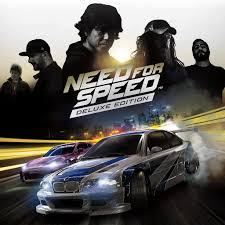

Need For Speed Underground 2
Need for Speed: Underground 2 é um jogo de corrida desenvolvido pela EA Black Box e publicado pela Electronic Arts. Lançado em 2004, o jogo é a sequência de Need for Speed: Underground e se passa em uma cidade fictícia chamada Bayview.
No jogo, os jogadores podem personalizar seus carros, participar de corridas em diferentes modos e explorar a cidade em um mundo aberto. Com uma variedade de veículos, trilha sonora envolvente e jogabilidade emocionante, Underground 2 se tornou um clássico entre os fãs de jogos de corrida.